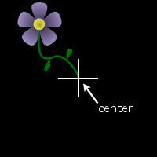
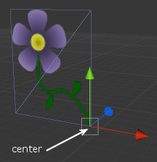

Building Atlases
The appearance of your controls is defined by associating a texture with each of the control's states. For performance reasons, you want as many of your controls as possible to share a single material, and that means they must also share a single texture atlas. Building your atlases is a step that takes all of the textures used by all controls that share the same material or Sprite Manager, and packs them together onto a single texture.To build your atlases
|
Texture Trimming
The "Trim Images" feature of the atlas builder can not only save you atlas space and texture memory, but also gives you an easier way to control the positioning of your sprites. The way it works is it "trims" away any unused transparent areas from your texture when placing it onto the atlas, but preserves the location of the texture information relative to the center of the original texture. Let's look at an example to get a clearer idea of how this works.


NOTE: For the original positioning information relative to the GameObject center to be used, the sprite/control must have its anchor method set to TEXTURE_OFFSET. This is the default. |